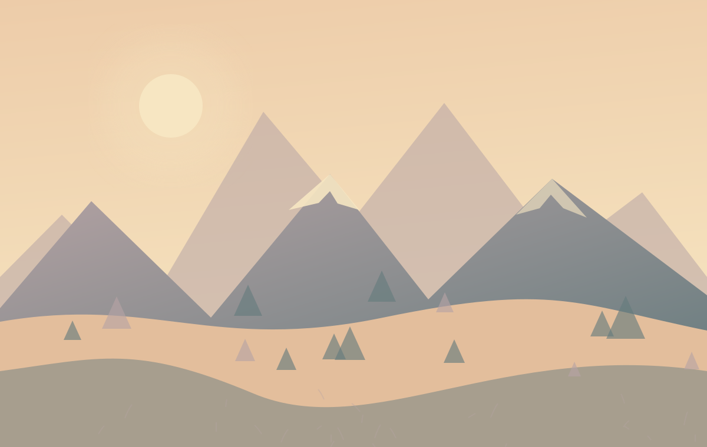
kortti1 01
Vuonojen rauha
Horisonttiin jatkuvia maisemia ja kiireettömiä aamuja.
12 kuvallista tarinaa pohjoisen luonnon tunnelmasta.
Tutustu maisemiin Kokeile: vie osoitin kuvan päälle tai napauta korttia.
Horisonttiin jatkuvia maisemia ja kiireettömiä aamuja.
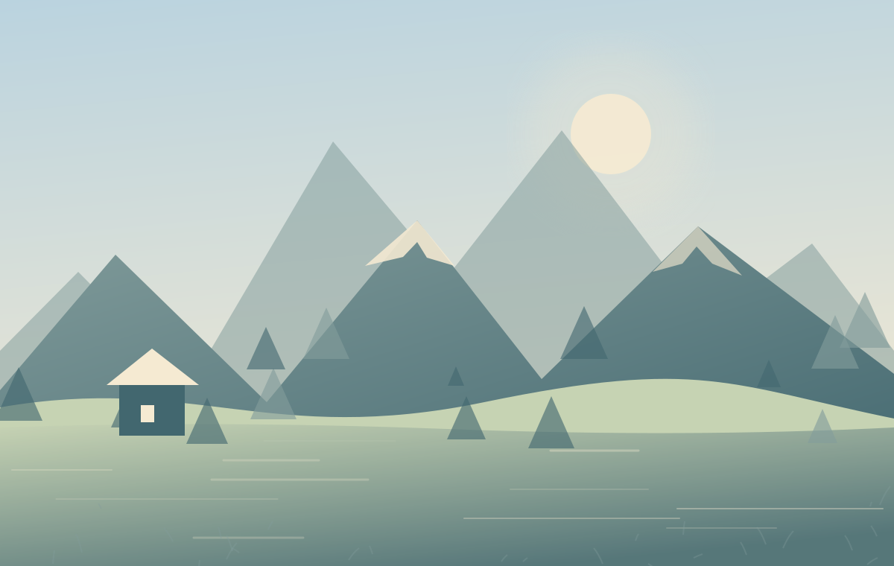
Polkuja, joilla jokainen askel tuntuu kevyemmältä.
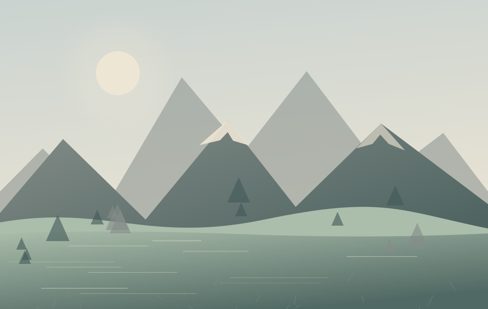
Vedenpinnan heijastuksia ja pehmeitä hetkiä.
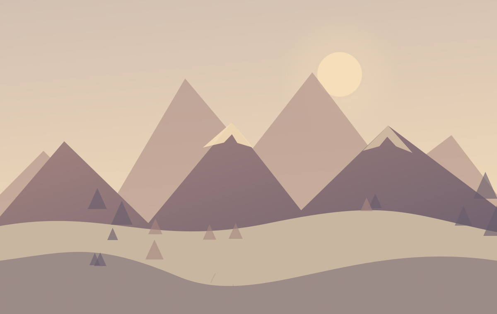
Avaruutta, valoa ja raikasta pohjoisen ilmaa.
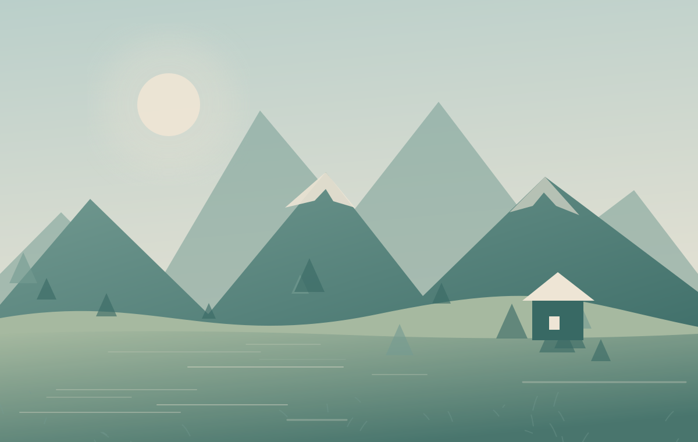
Auringon viimeiset säteet maiseman yllä.
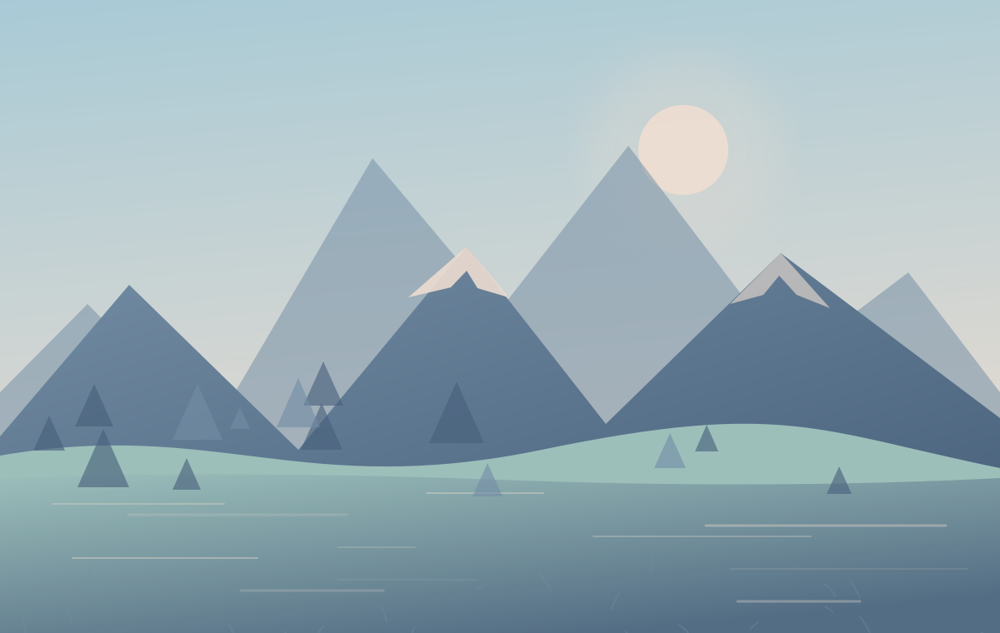
Yksinkertaisia iloja luonnon läheisyydessä.
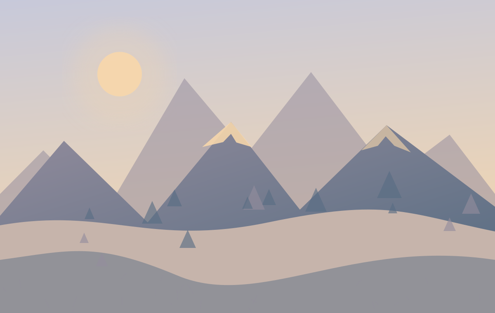
Suolainen tuuli ja horisontti ilman kiirettä.
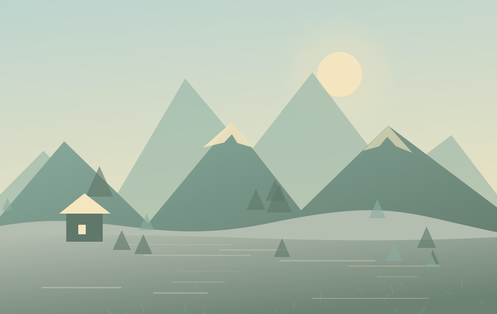
Vihreän sävyjä ja pehmeää metsänpohjaa.
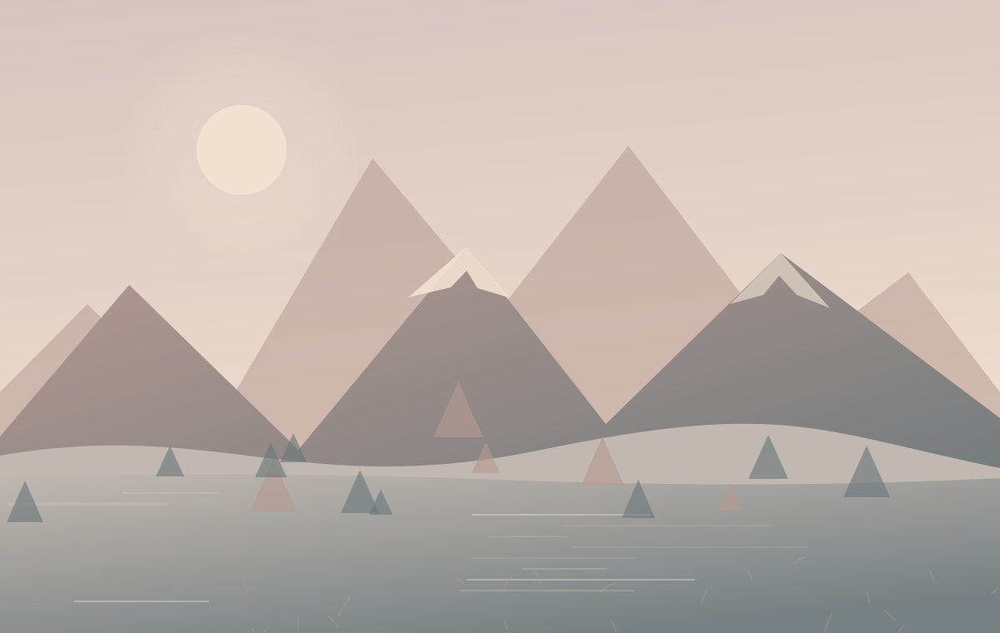
Hitaasti heräävän luonnon tunnelmaa.
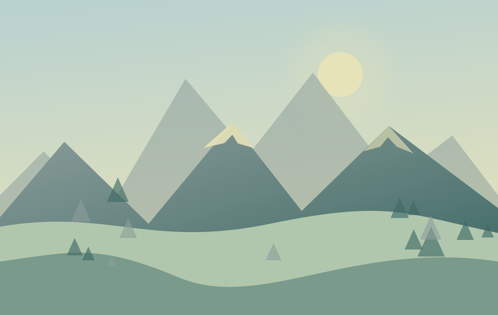
Päivän vaihtuvat värit luonnon näyttämöllä.
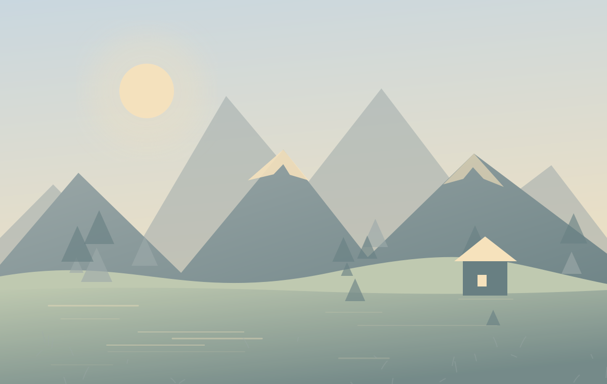
Kontrasteja, jotka tekevät hetkestä erityisen.
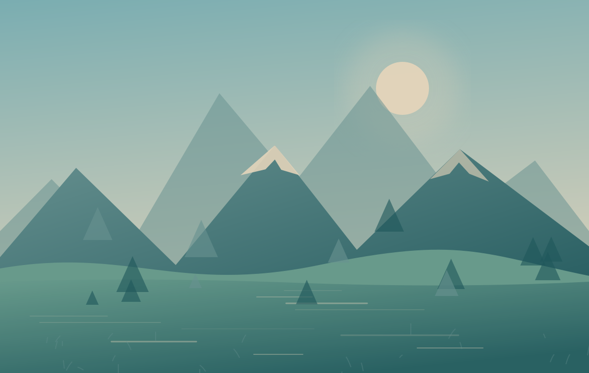
Anna ajatusten kulkea rauhassa kauemmas.